Face-recognition attendance and classroom entry / exit records
using the camera on every classroom interactive flat panel
windows\install_windows_server.bat as administrator (chapter 3).http://<PC-IP>:8000, sign in as admin / admin and change the password (chapter 4).http://<PC-IP>:8000/app, install the app and sign in with that classroom's login (chapter 9).IFP Classroom Attendance uses the camera on each classroom's interactive flat panel (IFP) to recognise students and teachers by face. It marks attendance and records when each person enters and leaves the classroom. Everything is stored on one server, your Windows PC, where all reports and analysis are available.
class8a. The panel app signs in with it, and the class teacher can use it in a browser to see only that class.| Term | Meaning |
|---|---|
| Sighting | One "person seen in this classroom at this time" record sent by a panel. A person in view is recorded about every 30 seconds. |
| Entry | The first time a person is seen in a classroom, or the first sighting after they were away. |
| Exit | The last time a person was seen, once they have been out of view for the classroom's exit after unseen time (default 10 minutes). If they come back later, a new entry starts. |
| In class now | Seen recently, within the exit time, so no exit has been recorded yet. |
| Present / Absent | Class register: present if seen in that classroom that day. Monthly register and Analytics: present if seen in any classroom that day. Absent if not seen on a school day. |
| H / WO | Holiday / weekly off. Nobody is marked absent on these days. |
| Classroom login | The username and password of one classroom. Used by its panel app and its class teacher. |
| Kiosk link | A secret web address for a classroom's camera screen. The app gets it automatically when it signs in; you rarely need it yourself. |
| Item | Requirement |
|---|---|
| Server PC | Windows 10 or 11, 4 GB RAM or more, about 2 GB free disk. It must stay switched on during school hours; set Sleep to Never when plugged in. Give it a fixed IP address (DHCP reservation in the router, or a static IP). |
| Software on the server | Python 3.10 or newer from python.org, installed with Add Python to PATH ticked. The installer downloads the rest the first time, so internet is needed once. |
| Classroom panels | Android 7 or newer IFPs with a built-in or USB camera. No OPS PC module is needed. |
| Network | Panels and the server PC on the same school network (LAN or Wi-Fi), with TCP port 8000 reachable on the server. The installer opens it in Windows Firewall. |
| Photos | One or more clear, front-facing photos of each student and teacher. ID-card photos are fine. |
| Consent | Parent/guardian consent for students' biometric data (see chapter 18). |
ifp-classroom folder| Folder / file | Purpose |
|---|---|
windows\ | Installer, start-up script, daily backup and uninstaller for the Windows server. |
classroom_app\ | The server program, including the panel app file static\app\ifp-classroom.apk. |
data\ (created by the installer) | All your data: database, backups and logs. Back this folder up. |
android\ | Source of the panel app, only needed to rebuild it. |
docs\ | This guide and a text version (SETUP.md). |
python.org/downloads. On the first installer screen, tick Add Python to PATH.ifp-classroom folder to the PC, e.g. C:\IFPClassroom. Keep it in a fixed place; the start-up task points to it.windows folder, right-click install_windows_server.bat and choose Run as administrator.| Item | Details |
|---|---|
| Start-up task IFP Classroom Server | Starts the server whenever Windows starts, even before anyone signs in. It restarts the server automatically if it ever stops. |
| Firewall rule IFP Classroom Server | Allows incoming TCP port 8000 on private and domain networks. |
| Task IFP Classroom Backup | Copies the database to data\backups every day at 17:30 and keeps the latest 30 copies. |
data\server.log | Server messages, useful when something goes wrong. |
On the server PC open http://localhost:8000. On any other PC, open http://<PC-IP>:8000, e.g. http://192.168.1.10:8000. Sign in with admin / admin.
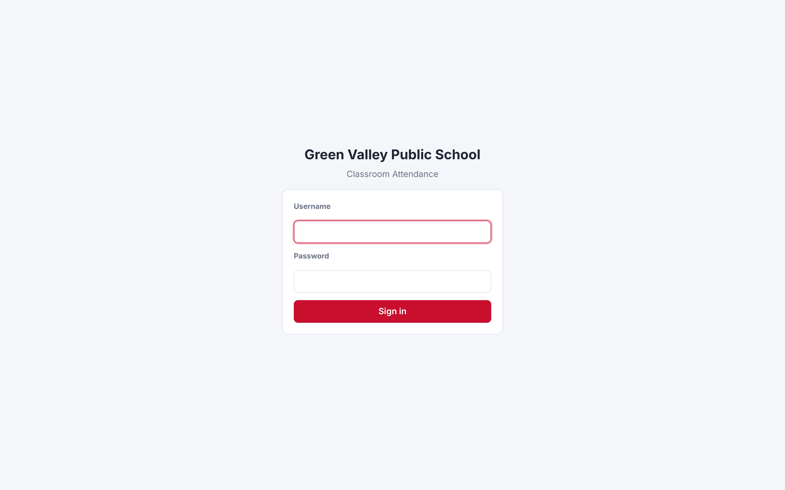
| Menu item | What it is for | Chapter |
|---|---|---|
| Classrooms | Classrooms, their logins, panel status, periods and recognition settings | 5, 6 |
| Analytics | Attendance trends and summaries for any period | 14 |
| Class Register | Daily register for one classroom | 11 |
| Entry / Exit Log | Every entry and exit, with times | 12 |
| Monthly Register | Month grid of P / A / H / WO with totals and % | 13 |
| Students & Teachers | People, CSV import/export, face photos | 7, 8 |
| Holidays | School holidays | 6 |
| Settings | School name, your password, users, backup | 15, 16 |
| Audit Log | Who changed what, and when (admin only) | 16 |
The pages also work on phones and tablets: tap ☰ Menu to open the menu.
Open Classrooms. The top of the page shows the number of students and teachers and how many of them have face photos. The table below lists every classroom.
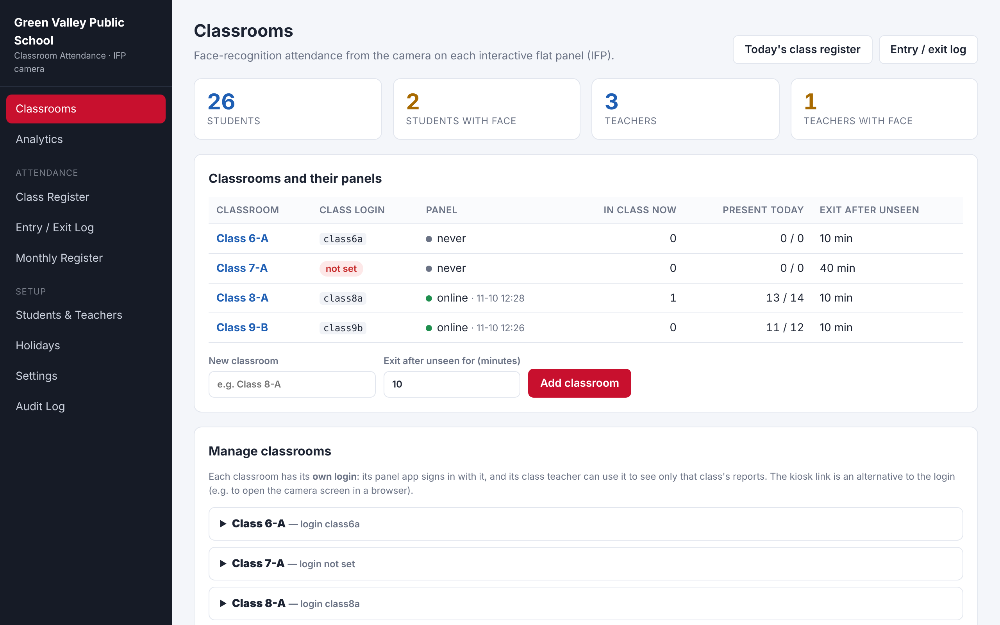
| Column | Meaning |
|---|---|
| Classroom | Click the name to open today's register for that room. |
| Class login | The room's username. not set (red) means the panel cannot sign in yet. |
| Panel | online: the panel checked in during the last 10 minutes. offline: it has been silent longer. never: no panel has signed in yet. The time of the last check-in is shown. |
| In class now | People currently in the room. |
| Present today | Students of this home classroom seen today / total students of this room. |
| Exit after unseen | How long someone must be out of view before an exit is recorded. |
Below the table, type a name (e.g. Class 8-A), set Exit after unseen for (normally 10 minutes) and click Add classroom.
Under Manage classrooms, click a classroom to open it:
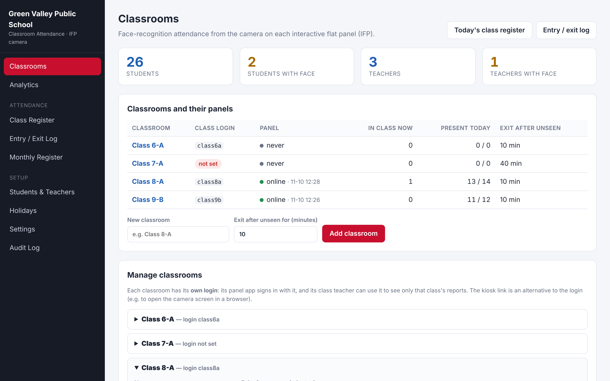
class8a, and a password of at least 6 characters.| Action | Effect |
|---|---|
| Name / Exit after unseen / Status → Save | Rename the room, change its exit time, or disable it. A disabled room's panel stops recording. |
| Open kiosk | Opens the camera screen in a browser, for testing on a PC with a webcam. |
| New link (signs the panel out) | Replaces the room's secret kiosk link. The panel stops working until it signs in again. Use it if a login may have leaked, together with a new password. |
| Delete classroom | Deletes the room, its login and all its entry/exit records. It cannot be undone. |
These are at the bottom of the Classrooms page; holidays have their own page.
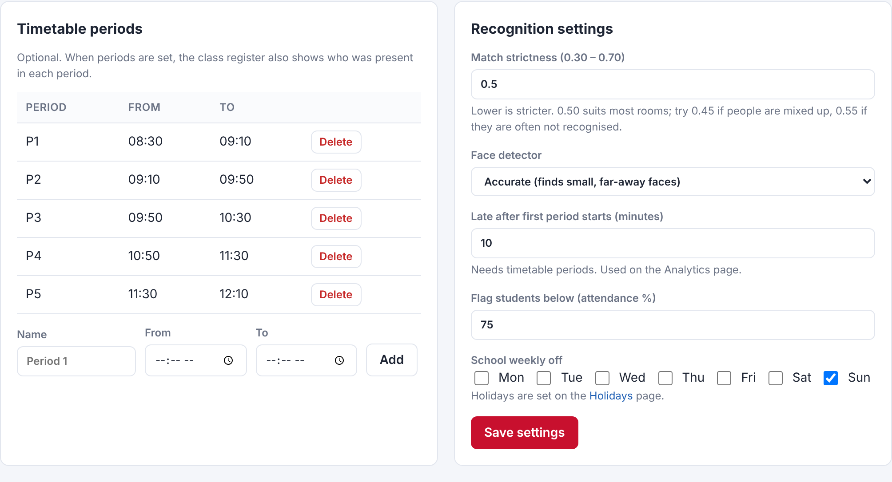
Add each period with a name, start and end time, e.g. P1 08:30–09:10. With periods set:
| Setting | Meaning | Default |
|---|---|---|
| Match strictness | How similar a face must be to an enrolled photo, from 0.30 to 0.70. Lower is stricter. If people get mixed up, lower it (e.g. 0.45). If people are often not recognised, raise it (e.g. 0.55). | 0.50 |
| Face detector | Accurate finds small and far-away faces. Fast suits slower panels. A panel switches itself to Fast if Accurate is too slow on it. | Accurate |
| Late after first period starts | Minutes of grace before an arrival counts as late (needs periods). | 10 |
| Flag students below | Attendance % under which a student is flagged on the Analytics page. | 75% |
| School weekly off | Days with no school. Nobody is marked absent on them. | Sunday |
Panels pick up changed settings within 5 minutes.
Open Holidays, choose a date and name and click Add holiday. Use the year buttons to move between years. Holidays show as H in the registers.
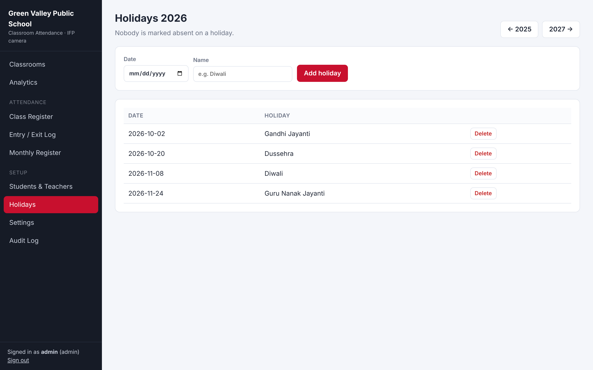
Open Students & Teachers. You can search by name or number and filter by role, class or home classroom. The Face photos column shows none for people the panels cannot recognise yet.
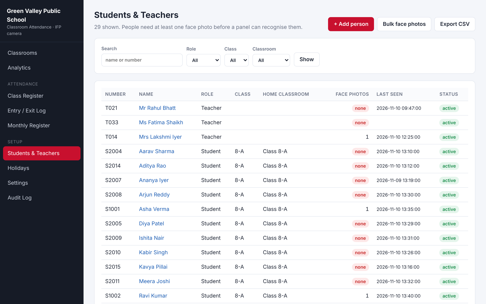
Click + Add person and fill in the form:
| Field | Notes |
|---|---|
| Admission / staff number | Unique, e.g. S1023 or T014. Bulk photo files are named after it. |
| Full name | Shown on the panel and in reports. |
| Role | Student or Teacher. |
| Class / section | e.g. 8-A. Used for filters, the monthly register and class-wise analytics. |
| Home classroom | The room whose register lists this student, and which marks them absent when they are not seen. For teachers, leave it empty or choose their class-teacher room. |
| Active | Untick for people who have left. They stop being recognised and listed, but their past records stay. To remove everything, use Delete on their page. |
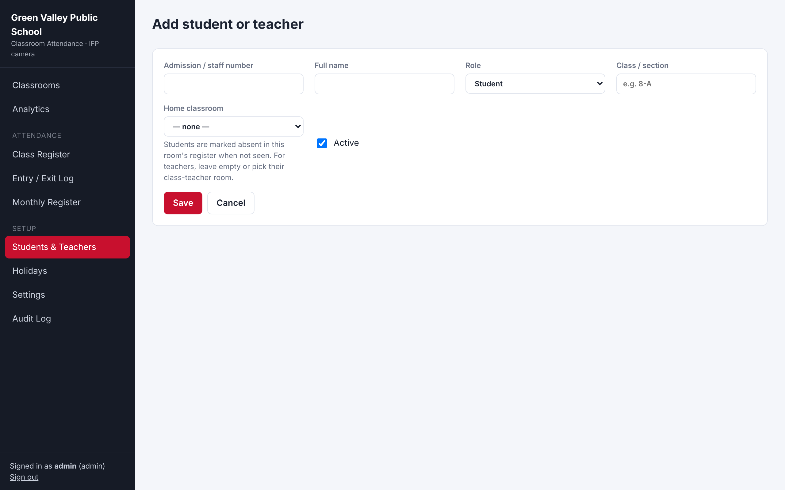
At the bottom of the list, choose a CSV file and click Import. Easiest: click Export CSV first to get a template, fill it in Excel, and save it as CSV UTF-8.
| Number | Name | Role | Class | Classroom | Active |
|---|---|---|---|---|---|
| S1023 | Asha Verma | student | 8-A | Class 8-A | 1 |
| T014 | Mrs Lakshmi Iyer | teacher | 1 |
A panel can only recognise people who have at least one face photo. The best results come from 2–5 photos per person: front-facing, good light, no sunglasses or masks. Photos are converted to face data in your browser. The server keeps only the face data (128 numbers) and a small thumbnail, never the original photo.
S1023.jpg. For extra photos of the same person add _2, _3…, e.g. S1023_2.jpg.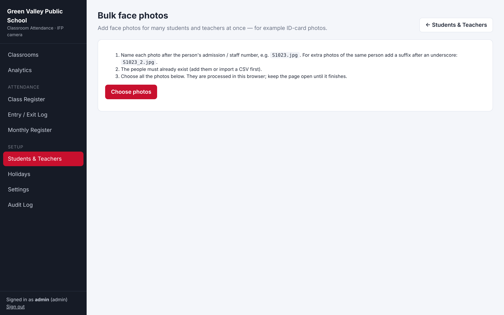
Open the person's page. Use Upload photos to choose image files, or Use camera → Capture face to take photos with a webcam. Turn the head slightly between captures. Photos can be removed with Remove. Each person can have up to 10.
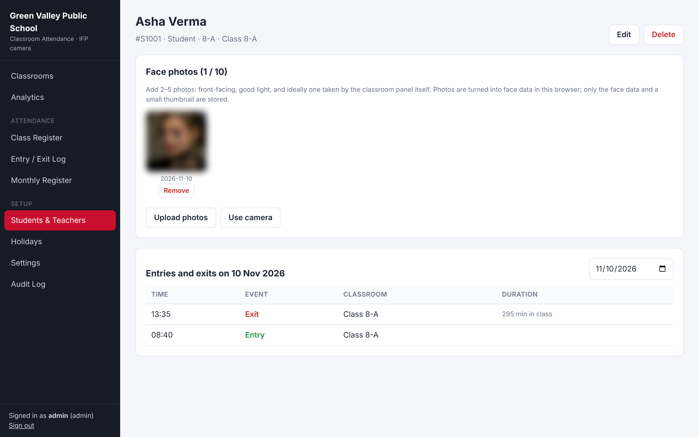
| Message | What to do |
|---|---|
| no face found | Use a clearer, front-facing photo with the face fully visible. |
| more than one face in the photo | Crop the photo to one person. |
| the face is too small | Use a closer photo; the face should be at least about 60 pixels wide. |
| No student or teacher with number … | The file name does not match any number; check it, or add the person first. |
| already has 10 face photos | Remove an old photo first. |
Do this once on every classroom panel. It takes about 5 minutes per panel. Have that classroom's login ready (chapter 5).
http://<PC-IP>:8000/app, e.g. http://192.168.1.10:8000/app. Tap Download the app.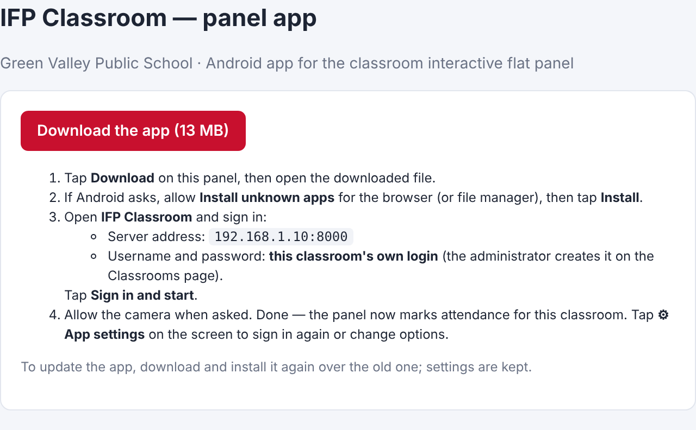
| Field / option | Notes |
|---|---|
| Server address | The server PC's address. 192.168.1.10 alone also works; port 8000 is assumed. |
| Classroom username / password | This room's login. An admin or viewer login is refused, so a panel is always linked to one classroom. The password is not stored on the panel. |
| Open automatically… | Opens the camera screen when the panel is switched on (see below). |
| Keep recognising… | Tries to keep the camera working while a teacher uses another app (see chapter 10). |
| Settings PIN | Asked for before anyone can change these settings from the camera screen. Recommended. |
/app over the old one. The panel stays signed in.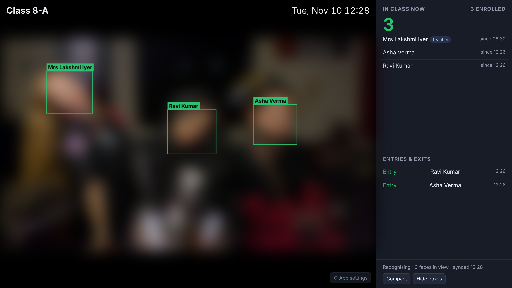
| Part | What it shows / does |
|---|---|
| Top bar | Classroom name, date and time. |
| Boxes on faces | Green with a name: recognised. Yellow "Unknown": a face with no matching enrolment. A person is counted after being recognised twice within 10 seconds, which avoids one-frame mistakes. |
| In class now | Count and names of people in the room, teachers first, each with the time since they entered. |
| Entries & exits | The latest entries and exits seen by this panel. |
| Status line | Recognising / faces in view / last sync time / records waiting to be sent. Problems such as the server being unreachable appear here in red. |
| Compact | A narrower layout for a small or side window. |
| Hide boxes | Hides the boxes and names on the camera image; recognition continues. |
| Camera list | Appears when the panel has more than one camera. The choice is remembered. |
| ⚙ App settings | Opens the sign-in / options screen (PIN protected). |
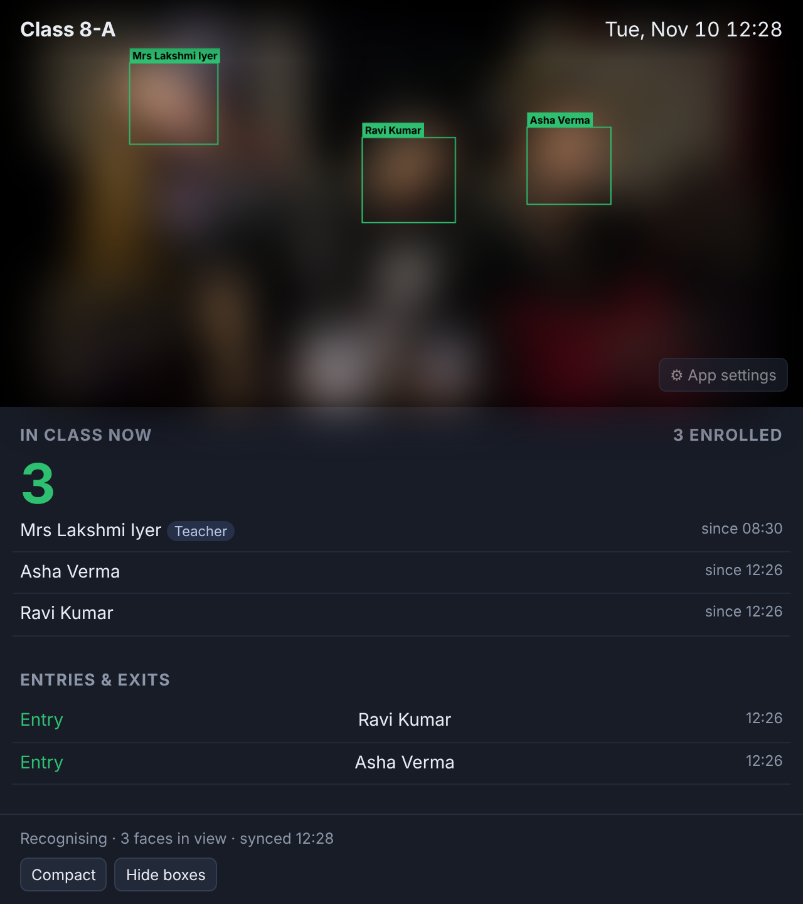
Android limits camera use by an app that is not on screen. With Keep recognising while another app is on screen switched on, the app asks Android to keep the camera running. A "Classroom attendance is running" notification shows while it does. How much Android allows depends on the panel's Android version and maker, so test it on your panel model:
If that doesn't work on your panel model:
Open Class Register. Choose the classroom, the date and whether to show everyone, only students or only teachers. Use ← Prev / Next → to move day by day.
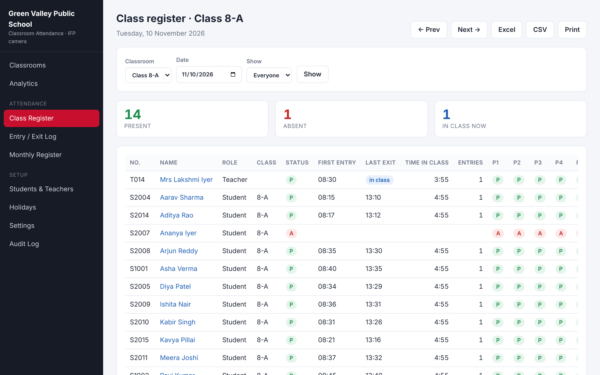
| Column | Meaning |
|---|---|
| Status | P present (seen in this room that day) · A absent · H holiday · WO weekly off · – future day. |
| First entry | First time seen in this room that day. |
| Last exit | Last time seen, or in class if they are still in the room. |
| Time in class | Total time between each entry and its exit (hours:minutes). |
| Entries | How many times they came in. More than 1 means they left and returned. |
| P1, P2… | Per-period attendance (only when periods are set): P if seen during the period. |
The register lists the room's home students (absent ones included) plus anyone else seen in the room, such as subject teachers or students from another section.
Downloads: Excel (formatted sheet), CSV and Print (print-friendly layout, or save as PDF from the print dialog).
Open Entry / Exit Log to see every entry and exit for a day, newest first. Filter by classroom or by a person's name or number. Export CSV downloads the list in time order.
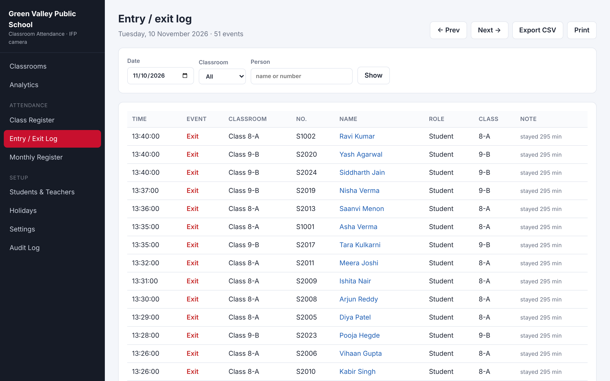
Open Monthly Register and choose the month. You can filter by class or home classroom, and choose students, teachers or everyone. A day counts as P when the person was seen by any classroom panel that day.
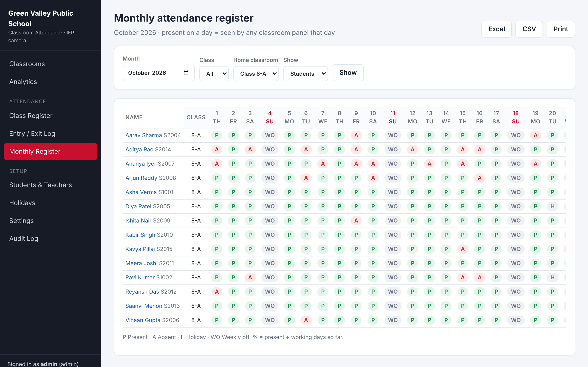
Open Analytics. Choose a period (this week, this month, the last 30 days, the academic year from April, or custom dates) and optionally a class. Only school days are counted: holidays and weekly offs are left out.
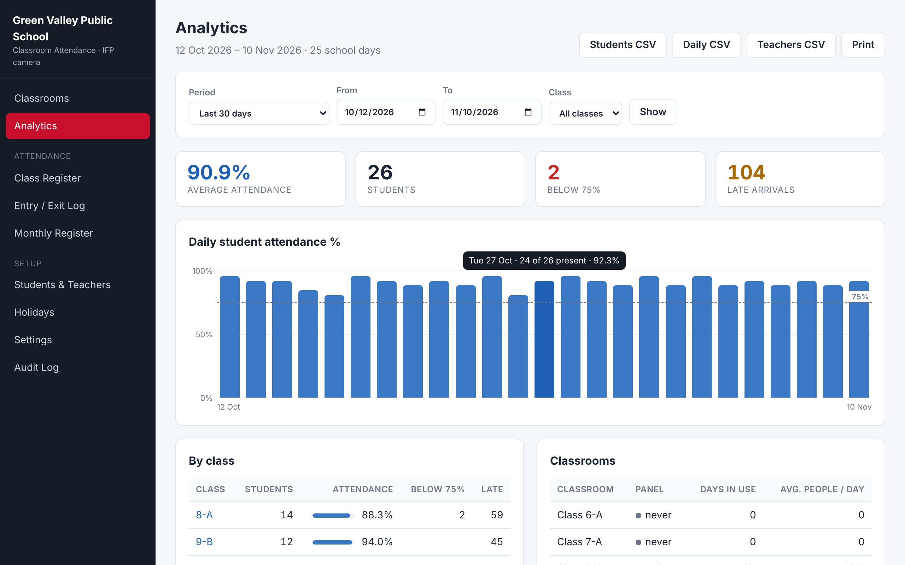
| Section | What it shows |
|---|---|
| Average attendance | Student-days present ÷ possible student-days in the period. |
| Below 75% | Number of students under the low-attendance threshold (chapter 6). |
| Late arrivals | Student-days first seen after the first period start plus the grace (needs periods). |
| Daily student attendance % | One bar per school day; the dashed line marks the threshold. Point at a bar to see the date and how many were present. |
| By class | Attendance %, number below threshold, and late arrivals per class. Click a class to analyse only that class. |
| Classrooms | Panel status, the days each room was in use, and the average number of people per day. |
| Students needing attention | Students sorted by attendance, lowest first, with absences and late arrivals; the lowest 50 are shown. |
| Teachers — time in classrooms | Days seen, total and average daily time each teacher spent in classrooms. |
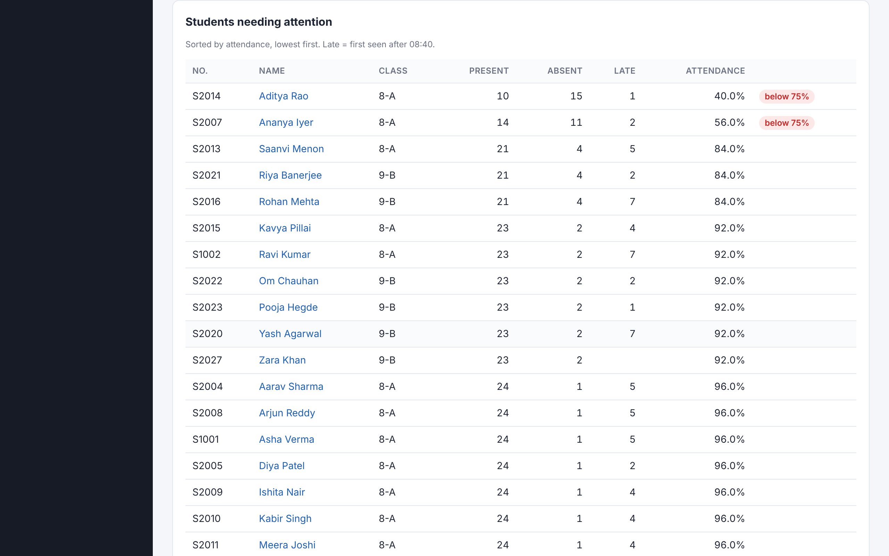
Downloads: Students CSV (every student's present/absent/late/%), Daily CSV (attendance % per day) and Teachers CSV (time in classrooms). Open them in Excel for your own charts and pivot tables.
| Login type | Who | Sees | Can change | Created at |
|---|---|---|---|---|
| Admin | You (IT administrator) | Everything | Everything | Settings → Users |
| Viewer | Principal, office | Every class's reports and analytics | Only their own password | Settings → Users |
| Classroom | That room's panel app and its class teacher | Only that class: register, entry/exit log, monthly register, analytics, its own students' pages | Only its own password | Classrooms → Manage classrooms |
When the class teacher signs in with the classroom login (e.g. class8a) in a browser, the menu shows only My classroom pages, limited to that room. Pages of other classes and all setup pages are not available.
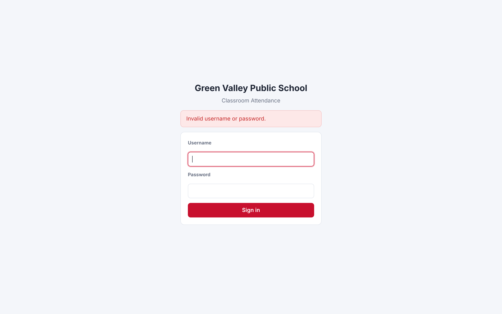
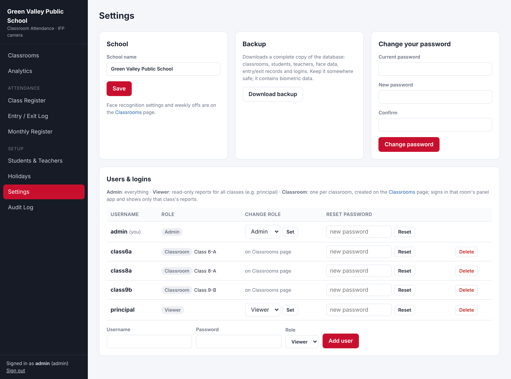
Audit Log (admin only) records who did what and when: sign-ins, panel sign-ins, classrooms, logins, people, face photos, holidays and settings. Search it, or download it with Export CSV.
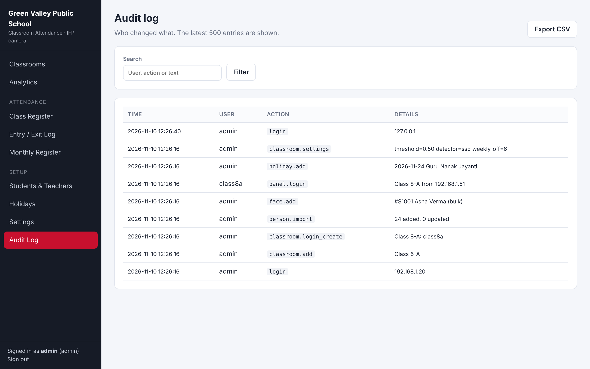
data\backups (latest 30 kept), and always before an update changes the database.data folder to another disk or drive now and then.windows\uninstall_windows_server.bat as administrator to stop the server. Copy the backup file over data\classroom.db (rename it to that name), then run the installer again.ifp-classroom folder over the old one. Do not delete the data folder.windows\install_windows_server.bat as administrator again. Database changes are applied automatically after a safety backup./app. It installs over the old one.Run windows\uninstall_windows_server.bat as administrator. It removes the start-up task, the backup task and the firewall rule; the data folder is kept. To move, copy the whole folder, including data, to the new PC and run the installer there. If the IP address changes, sign each panel in again with the new address.
On the server PC, open a command prompt in the ifp-classroom folder and run:
set CLASSROOM_DATA_DIR=%cd%\data then .venv\Scripts\python -m flask --app classroom_app reset-admin. The admin password becomes admin; change it straight away.
| Problem | What to check / do |
|---|---|
| Installer says "Python 3.10 or newer was not found" | Install Python from python.org with Add Python to PATH ticked. If it is installed, switch off the Store shortcuts: Windows Settings → Apps → Advanced app settings → App execution aliases → turn off python.exe and python3.exe. Run the installer again. |
Browser cannot open http://<PC-IP>:8000 | Is the server PC on? Does http://localhost:8000 work on the PC itself? If yes, the firewall or network profile is blocking others (chapter 3). If no, look at data\server.log and run the installer again. |
| Panel: "Cannot reach the server" | Is the address right (with :8000)? Is the panel on the school network rather than a guest Wi-Fi? Can the panel's browser open http://<PC-IP>:8000/app? |
| Panel: "Wrong username or password" | Check the classroom login on the Classrooms page. Set a new password with Update login if needed. |
| Panel: "Use the classroom's own login" | An admin or viewer login was used; use the classroom's login. |
| Panel: "no longer signed in" | The room's link was replaced (New link) or the room was deleted or disabled. Sign in again. |
| Panel shows offline on Classrooms | The app is closed, the panel is off, or the network is down. Open the app; the status line shows the reason. |
| Camera does not start | Allow the camera for IFP Classroom (Android Settings → Apps → IFP Classroom → Permissions). Close other apps using the camera, e.g. video calls. If the panel has two cameras, choose the right one in the camera list. |
| "No students or teachers have face photos yet" | Add face photos (chapter 8). The panel picks them up within 5 minutes. |
| Someone is not recognised | Add more photos, including one from the panel. Check lighting and distance (faces up to about 5–6 m). Raise Match strictness slightly (0.55). |
| Two people are confused | Lower Match strictness (0.45) and add more photos of both. |
| Students marked as leaving mid-lesson | The panel could not see them, e.g. while another app was full screen. Increase the room's exit time, or use split screen (chapter 10). |
| App does not open at power-on | Allow "Display over other apps" (chapter 9) and/or set the panel's own start-up app setting. |
| Recognition is slow on a panel | Set Face detector to Fast (chapter 6). The panel also does this by itself when it detects it is too slow. |
| Wrong attendance on a holiday | Add the date on the Holidays page; reports update immediately. |
| ✓ | Task | Chapter |
|---|---|---|
| ☐ | Parent/guardian consent collected; notice displayed | 18 |
| ☐ | Server PC has a fixed IP, does not sleep, network profile is Private | 2, 3 |
| ☐ | Server installed; http://<PC-IP>:8000 opens from another PC | 3 |
| ☐ | Admin password changed; school name set | 4 |
| ☐ | All classrooms added, each with its own login | 5 |
| ☐ | Weekly offs, holidays and timetable periods set | 6 |
| ☐ | Students and teachers imported with home classrooms | 7 |
| ☐ | Everyone has at least 2 face photos (no "none" on the people list) | 8 |
| ☐ | Pilot: one panel installed, signed in, recognising, and showing online | 9, 10 |
| ☐ | "During lessons" test done on the panel model; exit times chosen accordingly | 10 |
| ☐ | Registers checked against a manual roll call for a few days | 11–13 |
| ☐ | App installed on all panels with a PIN; auto-start checked after a power cycle | 9 |
| ☐ | Class teachers given their classroom login; principal given a viewer login | 15 |
| ☐ | Backup checked: a file appears in data\backups; a copy is kept off the PC | 16 |
| Column | Required | Values |
|---|---|---|
| Number | yes | Admission or staff number; unique. Existing numbers are updated. |
| Name | yes | Full name. |
| Role | no | student (default) or teacher. |
| Class | no | Class/section, e.g. 8-A. |
| Classroom | no | Home classroom; must match a classroom name. |
| Active | no | 1 (default) or 0 / no / inactive. |
| Setting | Where | Range / default |
|---|---|---|
| Exit after unseen (per room) | Classrooms | 1–240 minutes; 10 |
| Match strictness | Classrooms | 0.30–0.70; 0.50 (lower = stricter) |
| Face detector | Classrooms | Accurate / Fast; Accurate |
| Late grace | Classrooms | 0–120 minutes; 10 |
| Low-attendance threshold | Classrooms | 1–100 %; 75 |
| Weekly off | Classrooms | any days; Sunday |
| School name | Settings | text |
| Address | Purpose |
|---|---|
http://<PC-IP>:8000 | Server web pages (sign in) |
http://<PC-IP>:8000/app | Panel app download page (no sign-in needed) |
http://<PC-IP>:8000/kiosk/<code> | A classroom's camera screen in a browser (kiosk link) |